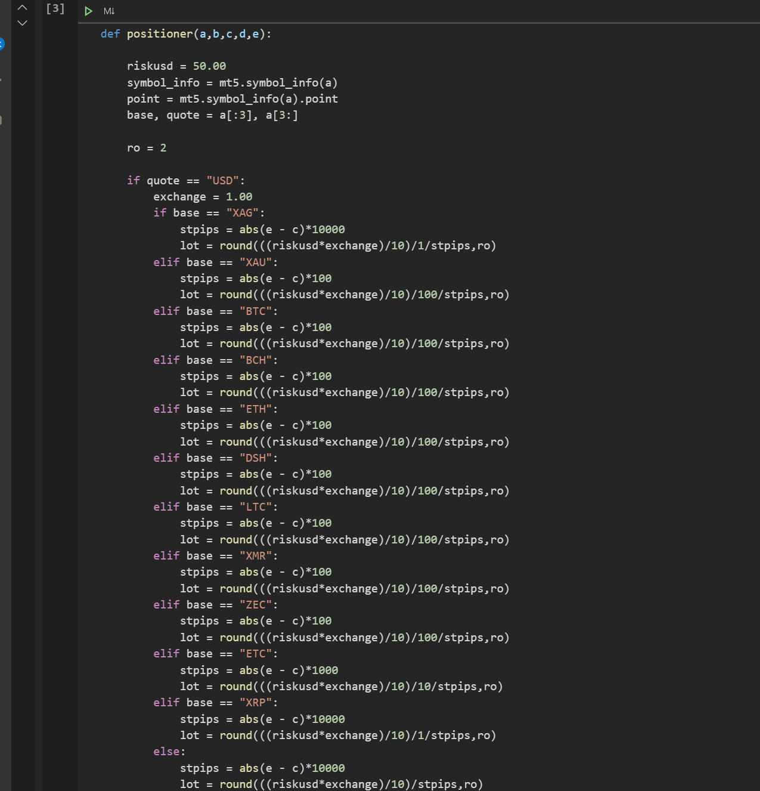
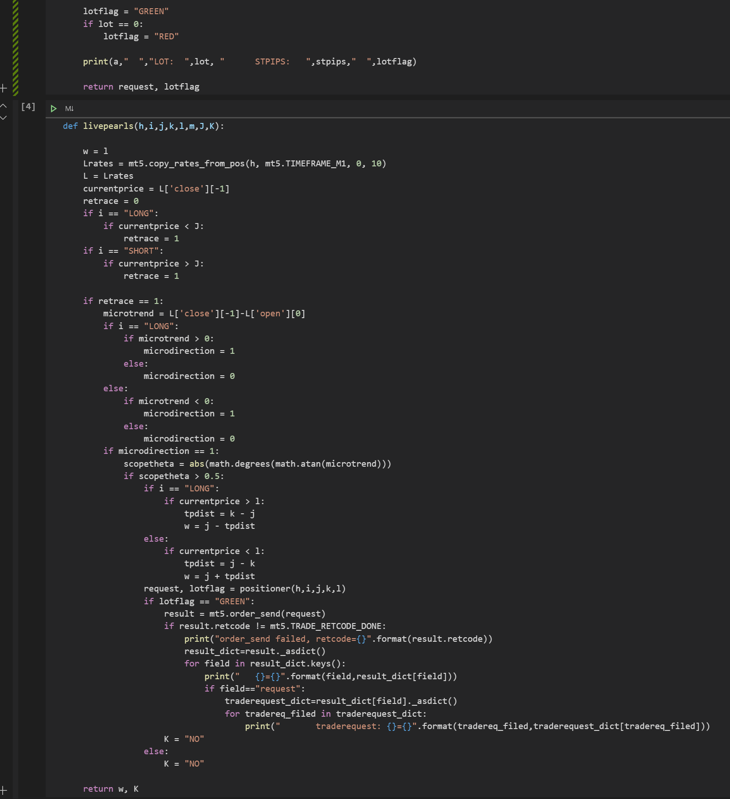
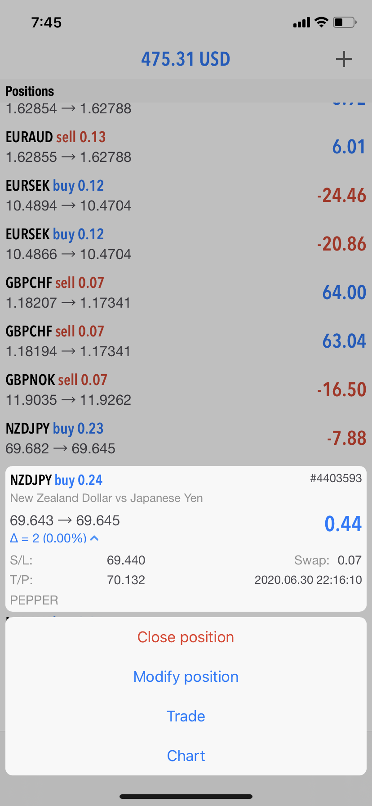
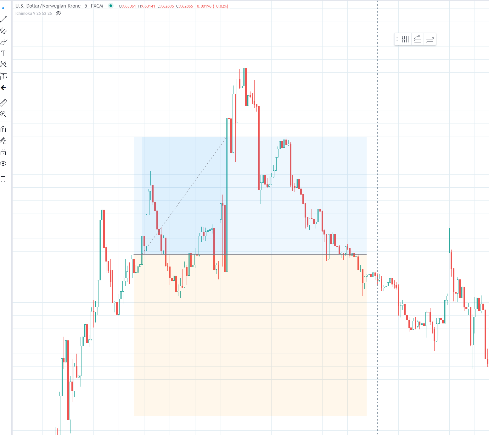

Algorithm Trading Bot
If you haven't already checked out my page on BRUTUS, take a look before reading on by clicking here. PEPPER is actually one of a handful of siblings to BRUTUS. Each sibling is designed with moderate differences in structural build (changes to functions/classes) with the intention of keeping a broad scope and hopefully engineering more than one profitable robot.
All of the bots are programmed to search each price pair for a confluence of patterns. These patterns constist of industry-popular analytical methods such as price levels, regressions, and concavity. However, once the confluence is detected, each sibling bot has its own protocols on how to handle potential trades.
For example, BRUTUS is designed to wait a maximum of 5 minutes for price to move in the favorable direction and with significant momentum. His sister MARY JANE is designed not to wait at all, and instead dive right into the trade upon recognizing confluence.
With that being said, PEPPER is our most comprehensive sibling yet. She can observe potential trades for up to 5 hours, she can watch hundreds of potential trades at a time, and - most importantly - she is much more selective about the specific price to enter the trade.
PEPPER's protocols have been designed thus far based on consecutive test results from BRUTUS and his siblings over the past weeks. She has begun Branch Testing as well, but will likely be modified again since she is most definitely a work in process.
I am optimistic about PEPPER, as she shows great potential already in early results.
Some of the programs used: